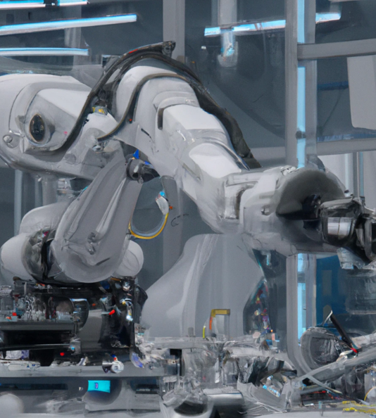

The Rise of Artificial Intelligence
What is Artificial Intelligence?
Types of Artificial Intelligence
Appilication of Artificial Intelligence
Suppervised learning
Unsupervised learning
Reinforcement Learning
Natural Language Processing
Computer Vision
Ethical Considerations of Artificial Intelligence
The Future of Artificial Intelligence
Conclusion
What is Artificial Intelligence?
Artificial Intelligence (AI) refers to the simulation of
human intelligence in machines that are programmed to
think and learn like humans. Al systems can perform
tasks that typically require human intelligence, such as
visual perception, speech recognition, decision-making,
and language translation.
Al has been around for decades, but recent
advancements in computing power and data storage
have made it more powerful than ever before.Today,
Al is used in a wide range of applications, from self-driving
cars to medical diagnosis to financial trading.
Types of Artificial Intelligence
There are two main types of Al: narrow or weak Al,
and general or strong Al. Narrow Al is designed to perform
specific tasks, while general Al is capable of performing
any intellectual task that a human can do.
Within narrow Al, there are three subcategories: reactive
machines, limited memory machines, and theory of mind
machines. Reactive machines ca only react to specific
situations, limited memory machines can learn from past
experiences, and theory of mind machines can
understand emotions and beliefs.

Applications of Artificial Intelligence
Al is used in a wide range of applications, from
healthcare to finance to transportation. In healthcare, Al
is used to diagnose diseases, develop personalized
treatments, and analyze medical images. In finance, Al is
used for fraud detection, risk assessment, and
algorithmic trading. In transportation, Al is used for self-
driving cars, traffic management, and predictive
maintenance.
Al is also used in entertainment, such as creating
realistic video game characters and recommending
personalized content to users. Additionally, Al is being
used to improve sustainability efforts, such as reducing
energy consumption and optimizing waste management.
Ethical Considerations of Artificial Intelligence
As Al becomes more advanced and integrated into our
daily lives, there are important ethical considerations to
take into account. One concern is the potential for Al to
perpetuate existing biases and discrimination,
particularly if the data used to train the Al system reflects
these biases.
Another concern is the Impact of Al on employment, as
many jobs may become automated and replaced by machines.
Additionally, there are concerns about the use of Al in military
applications and the potential for autonomous weapons to make
decisions without human oversight.
The Future of Artificial Intelligence
The future of Al is both exciting and uncertain. Some
experts predict that Al will revolutionize every aspect of our
lives, from healthcare to education to entertainment.
Others warn of the potential dangers of Al, such as the
loss of privacy and control over our own lives
Regardless of what the future holds, it is clear that Al will
continue to play an increasingly important role in our society.
It is up to us to ensure that we use this technology in a responsible
and ethical way, and to actively shape the future of Al to ,
benefit all of humanity.
Conclusion
Artificial Intelligence is a rapidly evolving field that has
the potential to transform every aspect of our lives. While there are
many exciting applications of Al, there are also important ethical
considerations to take into account
As we continue to develop and integrate Al into our
society, it is crucial that we do so in a responsible and
ethical way, ensuring that this technology benefits all of
humanity and not just a privileged few.
Presented to
[MA'AM]
By
AABHASH PATHK (22BCS001)
ABHINAV KUMAR (22BCS003)
ADITYA ALOK (22BCS006)
ANKIT SINGH (22BCS015)
ARYA KUMARI (22BCS023)
BIGAN KUMAR (22BCS031)